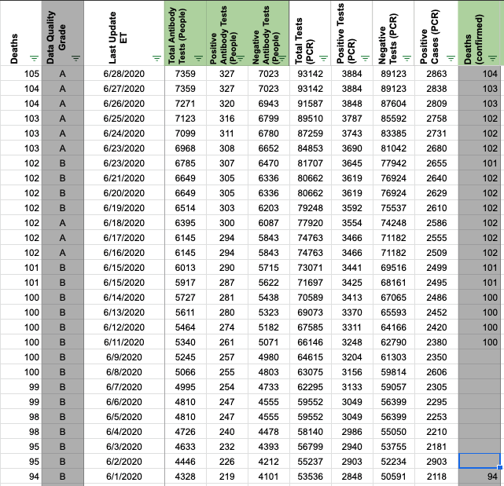
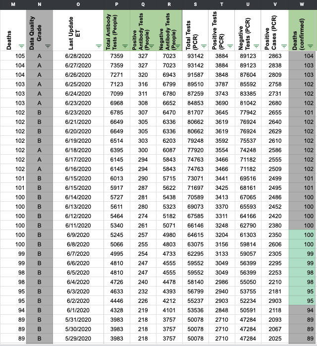

[ME] PCL Historicals and WS2
As of 6/23, ME now provides separate confirmed and probable deaths. Deaths provided in the “Cumulative COVID-19 Cases by County” table are lumped but Confirmed and Probable can be separate by changing the “Case Status” in the “COVID-19 Case Trends” chart.
Death values are historically recorded in both the “Deaths” and “Deaths (Confirmed)” columns for ME. However, ME’s total death values represent lumped probable and confirmed figures, so they should only be recorded in the main “Deaths” field and confirmed and probably deaths should be separated beginning on 6/23.
Comments
DZL is DCing this - 6/26 10:29
Reopening this issue: There is a week gap from 6/03 - 6/10 where we did not input values in “Deaths (confirmed)” Since deaths before 6/23 may have been confirmed ([https://github.com/COVID19Tracking/issues/issues/536]), we’re keeping the “Deaths (confirmed)” column populated for now.
BEFORE  AFTER 
Changed the Worksheet2 tooltips Updated source for Deaths (confirmed) to “Select “Confirmed” in Case Status dropdown to view Confirmed Deaths” to reflect ME separating confirmed and probable deaths in “Case Trends” chart